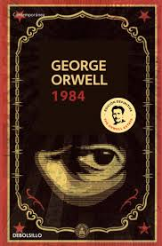

1984
Obra Maestra de la Distopía
George Orwell
Editorial Debolsillo - ISBN: 978-8499890944
Sinopsis de 1984
En una sociedad totalitaria controlada por el Gran Hermano, Winston Smith trabaja en el Ministerio de la Verdad alterando documentos históricos. Cuando comienza a cuestionar el sistema y se enamora de Julia, emprende un camino de rebelión contra un régimen que controla hasta el pensamiento.
Recomendado por Stephen King como una advertencia eterna sobre el poder y la vigilancia. Orwell anticipó con escalofriante precisión los peligros de los estados totalitarios, la manipulación mediática y la pérdida de la libertad individual. Más relevante hoy que nunca.
Análisis y Reseña del Libro
Análisis de la vigilancia totalitaria y la pérdida de libertad